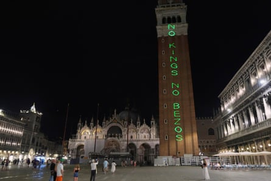

Lauren Sánchez packed 27 designer dresses for her wedding to the billionaire Amazon founder, Jeff Bezos , in Venice last week, but left with only 26 after one went missing.
The couple, who are now honeymooning in Taormina, Sicily, were wed during a star-studded three-day celebration in the lagoon city.
They left Venice on Sunday, but mystery over the missing dress has generated chatter in Venice, with Corriere della Sera claiming that it was stolen, possibly by someone who evaded security and gatecrashed a party on the tiny island of San Giorgio, where the couple exchanged rings, on Friday. The newspaper said the number of gatecrashers to the event was such that officers from the local unit of Italy’s anti-terrorism squad, Digos, were called to the island.
The newspaper also alleged a vintage Dolce & Gabbana-designed dress, either worn by the bride or wedding guest Ivanka Trump, was torn and caught fire during another party.
Sources familiar with the situation confirmed that a dress had gone missing but denied it was stolen. It is unclear where the dress disappeared and when. The couple lodged at the seven-star Aman hotel, where the bride’s wedding outfits were reportedly kept under close watch.
The sources stressed that no legal complaint about the missing dress had been made to police, with the expectation being that the garment would eventually “turn up”. They also denied the report that a dress caught fire and that the celebrations had been infiltrated by gatecrashers.
The nuptials, which are said to have cost between €40m and €48m (£34m-£41m), reportedly included everything from pyjama and foam parties to elegant dinners and a Great Gatsby-themed event.
But on almost every canal, alleyway and square, there were protests against the wedding, with anti-Bezos campaigners arguing that the celebrations risked turning Venice into a playground for the rich, bringing nothing but strife for ordinary residents. The location of the main reception party on Saturday had to be changed at the last-minute because of threats by protesters to fill the canals with inflatable crocodiles in order to prevent the 200 or so wedding guests, who included Whoopi Goldberg, Orlando Bloom and Kim Kardashian, from arriving.
The guests arrived in Venice on super-yachts and more than 90 private jets.
As Friday night’s party got into full swing, a green laser was used to spell out the slogan ‘No Kings, No Bezos’ on the bell tower in St Mark’s Square. Another stunt involved activists floating a lifesize mannequin of Bezos along the Grand Canal, clinging to an Amazon box while holding fake dollars.
The Venice mayor, Luigi Brugnaro, dismissed the protesters as “shameful” and said the Bezos-Sánchez union would fill Venetian coffers.
A green laser was used to spell out ‘No Kings, No Bezos’ on the bell tower in St Mark’s Square in protest at the wedding.Photograph: Antonio Calanni/AP
The couple have now moved on to Taormina. They reportedly arrived in Sicily on Bezos’s super-yacht before being transported by helicopter to the hilltop town on the island’s east coast, where they are staying in San Domenico Palace, the hotel made famous by the US TV show, The White Lotus.
For now, there have been no reports of protests or items of clothing gone astray on the southern Italian island. Instead, some political leaders have embraced the couple.
“Jeff and Lauren, we welcome you with open arms,” said Matteo Francilia, mayor of Furci Siculo, a small town near Messina. “Leave behind the beautiful lagoon with its absurd complaints! Here in Furci Siculo you’ll find sun, sea and genuine people, who would welcome you with open arms.”
It’s not the first time Bezos’s 127-metre super-yacht has sailed to Sicily. Last summer, the vessel toured the coastline near Taormina, and the Aeolian islands.